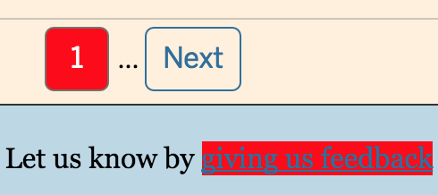
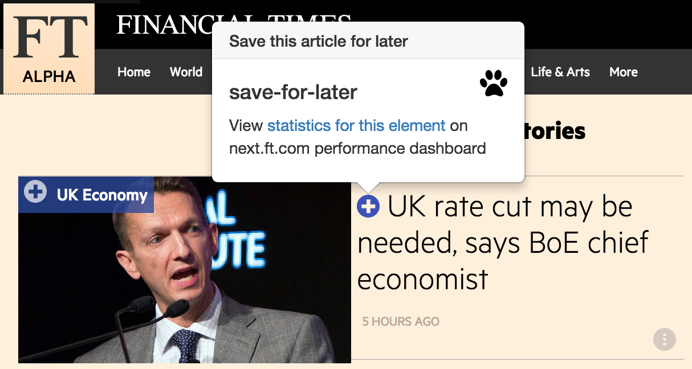

Mollydobbin: Options
Expose all elements that
ought
to be tracked but aren't.
Highlight untracked things

Show a statistics link to the ft.com performance dashboard
Show tooltips when pointing at things

Save